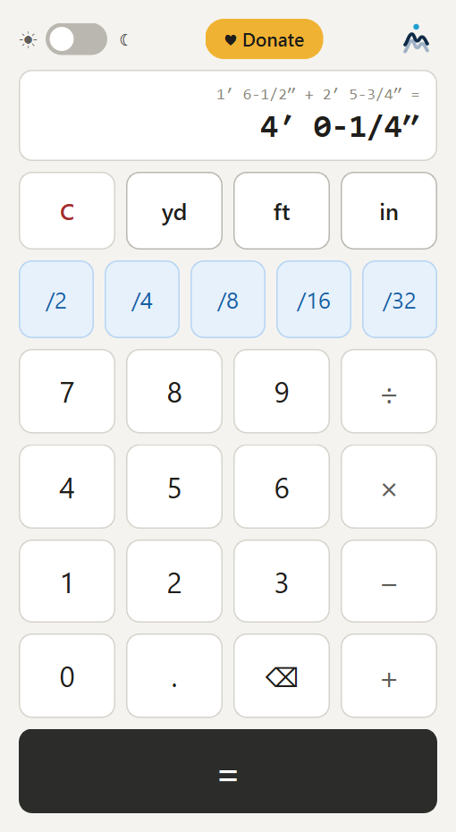

A desktop calculator built for DIY and construction projects that use imperial (SAE) measurements. Lengths are entered the way you say them — yards, feet, inches, and fractions of an inch — and every computation is done exactly on a 1/32″ grid, so results always land on your tape measure.
1 ft 6 in 1 /2 + 2 ft 5 in 3 /4 = gives 4′ 0-1/4″Free standalone application for Windows — a single .exe file, no installation required.
Use It in Your Browser Download for Windows Source on GitHubThe browser version at saecalculator.com works on phones too: open it and choose "Add to Home Screen" to install it like an app.
The download button brings you to the GitHub release page: scroll down to the Assets section and click saeCalculator.exe to download the application.
Windows may show a SmartScreen notice on first run because the download is unsigned; choose "More info", then "Run anyway".
